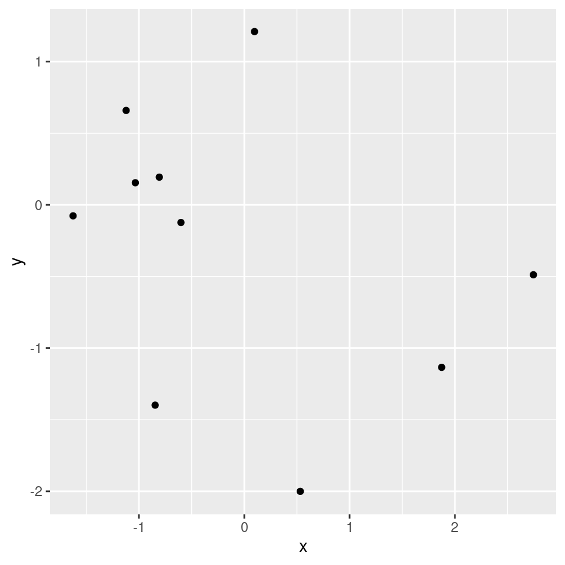
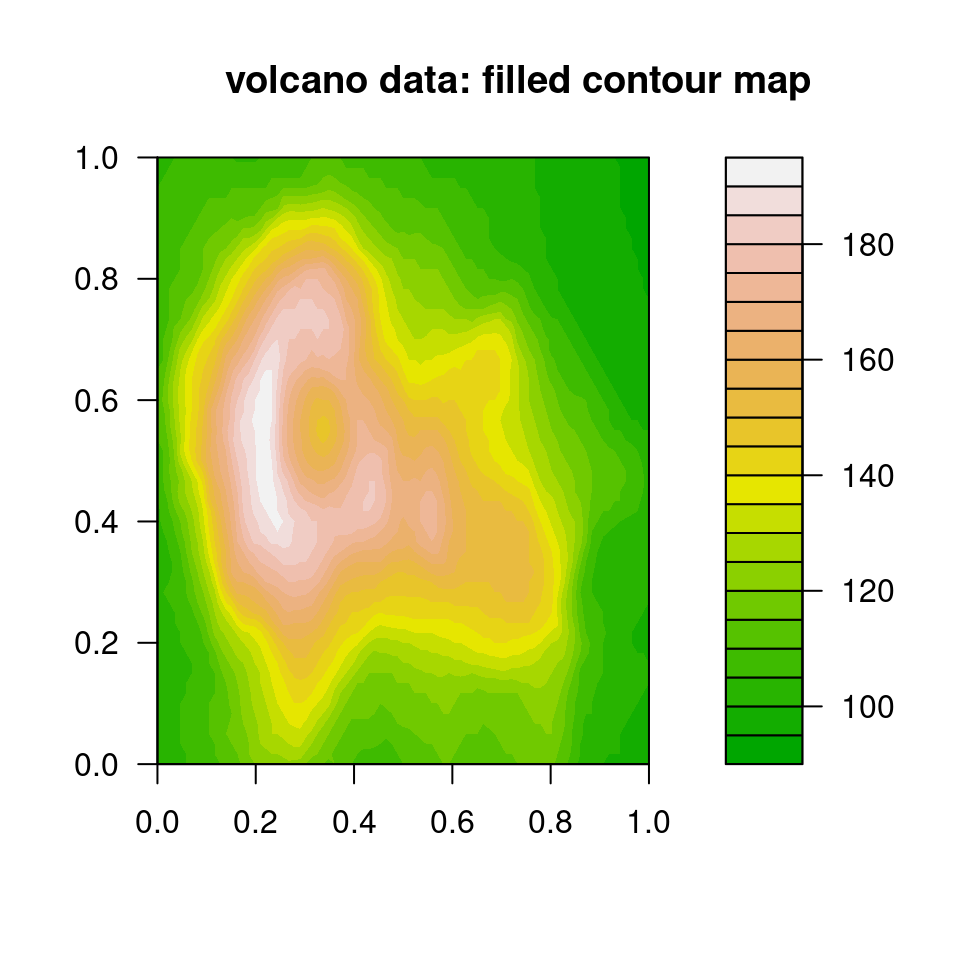

## Spread work across multiple (all available) cores
## based on result of `parallelly::availableCores()`:
plan(multisession)
## Alternatively, explicitly can control number of workers:
plan(multisession, workers = 4)Parallel Processing using the future package in R
1. Overview: Futures and the R future package
What is a future? It’s basically a flag used to tag a given operation such that when and where that operation is carried out is controlled at a higher level. If there are multiple operations tagged then this allows for parallelization across those operations.
According to Henrik Bengtsson (the package developer) and those who developed the concept:
- a future is an abstraction for a value that will be available later
- the value is the result of an evaluated expression
- the state of a future is either unresolved or resolved
Why use futures?
The future package allows one to write one’s computational code without hard-coding whether or how parallelization would be done. Instead one writes the code in a generic way and at the top of one’s code sets the plan for how the parallel computation should be done given the computational resources available. Simply changing the plan changes how parallelization is done for any given run of the code.
More concisely, the key ideas are:
- Separate what to parallelize from how and where the parallelization is actually carried out.
- Different users can run the same code on different computational resources (without touching the actual code that does the computation).
2. Overview of parallel backends
One uses plan() to control how parallelization is done, including what machine(s) to use and how many cores on each machine to use.
For example,
This table gives an overview of the different plans.
| Type | Description | Multi-node | Copies of objects made? |
|---|---|---|---|
| sequential | current R process (no parallelization; used for testing) | no | no |
| multisession | background R processes | no | yes |
| multicore | forked R processes (not available in Windows nor RStudio) | no | not if object not modified |
| cluster | R processes on other machine(s) | yes | yes |
For the next section (Section 3), we’ll just assume use of multisession and will provide more details on the other plans in the following section (Section 4).
The deprecated multiprocess plan used either multisession on Windows and multicore on MacOS/Linux. The deprecated remote plan is not needed because cluster provides equivalent functionality.
3. Implementing operations in parallel
The future package has a few main patterns for how you might parallelize a computation.
3.2. foreach
You can also continue to use foreach if you like that approach.
As of version 1.0.0 of doFuture, you can do this, using the %dofuture% operatior.
plan(multisession) # or some other plan
library(doFuture, quietly = TRUE)
registerDoFuture()
out <- foreach(i = 1:5) %dofuture% {
cat("Running in process", Sys.getpid(), "\n")
mean(1:i)
}Running in process 228246
Running in process 228244
Running in process 228249
Running in process 228247
Running in process 228245 out[[1]]
[1] 1
[[2]]
[1] 1.5
[[3]]
[1] 2
[[4]]
[1] 2.5
[[5]]
[1] 3Previously, one would use this approach with the %dopar% operator:
plan(multisession) # or some other plan
library(dofuture, quietly = TRUE)
registerDoFuture()
out <- foreach(i = 1:5) %dopar% {
cat("Running in process", Sys.getpid(), "\n")
mean(1:i)
}
outUsing %dofuture% has various advantages listed here.
3.3. Using futures for parallelization
While future_lapply and foreach are fine, the future package introduces a new style of parallelizing code using an explicit “future”. Here we include the code for individual iterations inside future() to mark the unit of computation. The future package will then distribute the individual iterations to run in parallel, based on the plan.
(Here the code is safe in terms of parallel randon number generation because of the seed argument - see Section 8 for more details.)
plan(multisession) # or some other plan
n <- 20
out <- list(); length(out) <- n
for(i in seq_len(n)) {
out[[i]] <- future( {
## simply insert code here as you would with foreach; for example:
tmp <- rnorm(1e7)
c(mean(tmp), sd(tmp))
}, seed = TRUE)
}
class(out[[5]])[1] "MultisessionFuture" "ClusterFuture" "MultiprocessFuture"
[4] "Future" "environment" ## Each return values (e.g., 'out[[1]]') is a wrapper, so use value() to access:
value(out[[5]])[1] 0.0002898683 0.99990485413.4. Using implicit futures (with listenvs)
In addition to using future(), one can use the special %<-% operator to denote a future. The %<-% operator can only operate with an environment. So we create a listenv, which is basically an environment that can be treated like a list.
This approach creates implicit futures, and one does not need to use value to get the result.
(Note that, as seen in the warnings, the code here is not safe in terms of parallel randon number generation - see Section 8 for more information.)
library(listenv)
plan(multisession, workers = 4)
n <- 20
out <- listenv()
for(i in seq_len(n)) {
out[[i]] %<-% {
# some code here as you would with foreach; for example:
tmp <- rnorm(1e7)
c(mean(tmp), sd(tmp))
}
}
out[[2]]Warning: UNRELIABLE VALUE: Future ('<none>') unexpectedly generated random
numbers without specifying argument 'seed'. There is a risk that those random
numbers are not statistically sound and the overall results might be invalid.
To fix this, specify 'seed=TRUE'. This ensures that proper, parallel-safe
random numbers are produced via the L'Ecuyer-CMRG method. To disable this
check, use 'seed=NULL', or set option 'future.rng.onMisuse' to "ignore".[1] 0.0003449889 0.9997519067outA 'listenv' vector with 20 elements (unnamed).options(warn = -1) ## suppress RNG warnings
out <- as.list(out)
options(warn = 0)3.5. Blocking and non-blocking calls
A ‘blocking call’ prevents the user from continuing to evaluate more expressions. Often, futures are evaluated in an asynchronous way and therefore are non-blocking except for when the actual evaluated value of the expression is requested.
Here we see that control returns to the user right away. However, asking for the value of the expression is a blocking call.
## future() is non-blocking (as is %<-%)
system.time(
out <- future( {
## some code here as in foreach
tmp <- rnorm(2e7)
c(mean(tmp), sd(tmp))
}, seed = TRUE)
) user system elapsed
0.026 0.000 0.027 ## Check if the calculation is done. This check is a non-blocking call.
## That said, it's surprising it takes even 0.2 seconds. I'm not sure why.
system.time(resolved(out)) user system elapsed
0.000 0.000 0.011 ## Get the value. This is a blocking call.
system.time(value(out)) user system elapsed
0.001 0.000 1.547 Blocking in the context of a loop over futures
In contrast, in a for loop, creation of additional futures is blocked if all workers are busy evaluating other futures. So in this case, evaluation of the first four futures blocks, but once the last two futures start to be evaluated, control returns to the user while those futures are evaluated in the background.
plan(multisession, workers = 2)
n <- 6
out <- list(); length(out) <- n
## Blocked until all six futures dispatched, so blocked until first four finish.
system.time(
for(i in seq_len(n)) {
out[[i]] <- future( {
tmp <- rnorm(2e7)
c(mean(tmp), sd(tmp))
}, seed = TRUE)
}) user system elapsed
0.290 0.009 3.774 ## Not blocked as result already available once first four finished.
system.time(value(out[[2]])) user system elapsed
0.000 0.000 0.001 ## Not blocked as result already available once first four finished.
system.time(value(out[[4]])) user system elapsed
0 0 0 ## Blocked as results for 5th and 6th iterations are still being evaluated.
system.time(value(out[[6]])) user system elapsed
0.000 0.000 1.568 4. A tour of different backends
4.1. Serial (sequential) processing
The sequential plan allows you to run code on a single local core. This might not seem all that useful since the goal is usually to parallelize, but this helps in debugging and allows someone to run future-based code even if they only have one core available.
plan(sequential)
## future_lapply, foreach with dofuture, etc. all will still workNote that like the parallel plans, the sequential plan evaluates all code in an isolated (‘local’) environment, so your R working environment is not affected.
Actually even better for debugging is the transparent plan, which provides additional useful output.
4.2. Multiple core processing on one machine
We’ve already seen that we can use the multisession plan to parallelize across the cores of one machine.
plan(multisession)By default, this will start as many workers as given in the result of parallelly::availableCores(), which should be the number of the computer or will be based on the resources available to your job, if you have a job running via a scheduler on a cluster, such as the Slurm scheduler for Linux clusters.
4.3. Distributed processing across multiple machines via an ad hoc cluster
If we know the names of the machines and can access them via password-less SSH (e.g., using ssh keys), then we can simply provide the names of the machines to create a cluster and use the ‘cluster’ plan.
Here we want to use four cores on one machine.
workers <- rep('arwen.berkeley.edu', 4)
plan(cluster, workers = workers)Here we want to use two cores on one machine and two on another.
workers <- c(rep('radagast.berkeley.edu', 2), rep('gandalf.berkeley.edu', 2))
plan(cluster, workers = workers)
# Check we are getting workers in the right places:
future_sapply(seq_along(workers), function(i) Sys.info()[['nodename']])[1] "gandalf" "gandalf" "radagast" "radagast"We can verify that the workers are running on the various machines by checking the nodename of each of the workers:
tmp <- future_sapply(seq_len(nbrOfWorkers()),
function(i)
cat("Worker running in process", Sys.getpid(),
"on", Sys.info()[['nodename']], "\n"))4.4. Distributed processing across multiple machines within a Slurm scheduler job
The future package can detect the available resources in the context of Slurm (and other schedulers). It uses parallelly::availableWorkers().
So you can simply call the cluster plan and get a sensible result in terms of the workers.
plan(cluster)For more manual control, if you are using Slurm and in your sbatch or srun command you use --ntasks, then the following will allow you to use as many R workers as the value of ntasks. One caveat is that one still needs to be able to access the various machines via password-less SSH.
workers <- system('srun hostname', intern = TRUE)
plan(cluster, workers = workers)In either case, we can check that the workers are running on the various machines using the syntax in the section just above.
Note that for this to work on the Berkeley Savio campus cluster with multiple nodes, you will probably need to load the R module via your .bashrc so that all the nodes have R and dependent modules available.
4.5. Off-loading work to another machine
One can run a chunk of code on a remote machine, for example if you need a machine with more memory.
Here’s an example where I create a plot remotely and view it locally.
plan(cluster, workers = 'gandalf.berkeley.edu')
## requires password-less SSH
## future (ggplot call) is evaluated remotely
library(ggplot2)
mydf <- data.frame(y = rnorm(10), x = rnorm(10))
g %<-% { ggplot(mydf, aes(x=x, y=y)) + geom_point() }
## plot locally
g
## future (ggplot call) is evaluated remotely
g %<-% R.devices::capturePlot({
filled.contour(volcano, color.palette = terrain.colors)
title(main = "volcano data: filled contour map")
})
## plot locally
gWarning in restoreRecordedPlot(x, reloadPkgs): snapshot recorded in different R
version (4.4.3)
5. Load-balancing and static vs. dynamic task allocation
future_lapplyuses static (non-load-balanced) allocation:- Groups iterations into tasks and creates only as many tasks as there are workers.
- This is good for reducing overhead but can potentially result in bad load-balancing if the tasks assigned to one worker take a very different time to complete from those assigned to a different worker.
- The
future.schedulingargument gives the user control over using static vs. dynamic allocation.
- Explicit or implicit futures use dynamic (load-balanced) allocation:
- Involves dispatching one task per iteration, with the resulting overhead (i.e., latency).
- Good for load-balancing when tasks take very different times to complete.
6. Avoiding copies when doing multi-process parallelization on a single node
The future package automatically identifies the objects needed by your future-based code and makes copies of those objects for use in the worker processes.
If you’re working with large objects, making a copy of the objects for each of the worker processes can be a significant time cost and can greatly increase your memory use.
On non-Windows machines, the multicore plan (not available on Windows or in RStudio) forks the main R process. This creates R worker processes with the same state as the original R process.
- Interestingly, this means that global variables in the forked worker processes are just references to the objects in memory in the original R process.
- So the additional processes do not use additional memory for those objects (despite what is shown in top as memory used by each process).
- And there is no time involved in making copies.
- However, if you modify objects in the worker processes then copies are made.
- You can use these global variables in functions you call in parallel or pass the variables into functions as function arguments.
So, the take-home message is that using multicore on non-Windows machines can have a big advantage when working with large data objects.
Unfortunately, the top program on Linux or MacOS will make it look like additional memory is being used. Instead, on a Linux machine, you can use the command free -h to see the usable remaining memory. Look under the ‘Available’ column of the ‘Mem’ row. For example, below we see 6.5 GB available and 8.2 GB used. (Note that the ‘free’ column omits memory that is actually available but is temporarily in use for caching.)
paciorek@smeagol:~/staff/workshops/r-future> free -h
total used free shared buff/cache available
Mem: 15G 8.2G 4.3G 453M 3.1G 6.5G
Swap: 7.6G 2.9G 4.7GHere’s some demo code to show that forking uses less memory.
First run free via watch in one terminal so you can monitor free -h while running the R code:
watch -n 0.1 free -hNow you can try running this code either with (using multicore) or without (using multisession) forking:
## allow total size of global variables to be large enough...
options(future.globals.maxSize = 1e9)
## Try with multicore:
x <- rnorm(5e7)
plan(multicore, workers = 3) # forks; no copying!
system.time(tmp <- future_sapply(1:100, function(i) mean(x)))
## Try with multisession:
x <- rnorm(5e7)
plan(multisession, workers = 3) # new processes - copying!
system.time(tmp <- future_sapply(1:100, function(i) mean(x)))7. Nested futures/for loops
You can set up nested parallelization and use various plans to parallelize at each level.
For example, suppose you are running a simulation study with four scenarios and each scenario involving n simulations. In that case you have two loops over which you could choose to parallelize.
Here’s some syntax to set up parallelization over the scenarios (outer loop) only. Note that when the plan involves multiple levels we need to use tweak if we want to modify the defaults for a type of future.
plan(list(tweak(multisession, workers = 4), sequential))
params <- cbind(c(0,0,1,1), c(1,2,1,2))
p <- nrow(params) # 4 in this case
n <- 10
out <- listenv()
for(k in seq_len(p)) { # outer loop: parameter sweep
out[[k]] <- future( {
out_single_param <- listenv()
for(i in seq_len(n)) { # inner loop: replications
out_single_param[[i]] %<-% {
tmp <- rnorm(2e7, params[k, 1], params[k, 2])
c(mean(tmp), sd(tmp))
}
}
matrix(unlist(out_single_param), ncol = 2, byrow = TRUE)
}, seed = TRUE)
}
## non-blocking - note that control returns to the user since we have
## four outer iterations and four workers
outA 'listenv' vector with 4 elements (unnamed).## asking for an actual value is a blocking call
out[[1]]MultisessionFuture:
Label: '<none>'
Expression:
{
out_single_param <- listenv()
for (i in seq_len(n)) {
out_single_param[[i]] %<-% {
tmp <- rnorm(2e+07, params[k, 1], params[k, 2])
c(mean(tmp), sd(tmp))
}
}
matrix(unlist(out_single_param), ncol = 2, byrow = TRUE)
}
Lazy evaluation: FALSE
Asynchronous evaluation: TRUE
Local evaluation: TRUE
Environment: R_GlobalEnv
Capture standard output: TRUE
Capture condition classes: 'condition' (excluding 'nothing')
Globals: 3 objects totaling 392 bytes (numeric 'n' of 56 bytes, matrix 'params' of 280 bytes, integer 'k' of 56 bytes)
Packages: 3 packages ('listenv', 'stats', 'future')
L'Ecuyer-CMRG RNG seed: c(10407, 685259277, -1301327100, -794103175, 644605022, -1466457024, 113265414)
Resolved: FALSE
Value: <not collected>
Conditions captured: <none>
Early signaling: FALSE
Owner process: 760598a1-7676-01da-5744-4cfc7c88fba3
Class: 'MultisessionFuture', 'ClusterFuture', 'MultiprocessFuture', 'Future', 'environment'Note that these are “asynchronous” futures that are evaluated in the background while control returns to the user.
7.1. Nested futures/for loops - some example plans
Let’s see a few different plans one could use for the nested loops.
To use eight cores on the current machine, two cores for each of the four outer iteration:
## One option:
plan(list(tweak(multisession, workers = 4), tweak(multisession, workers = 2)))
## Another option
nodes <- rep('localhost', 4)
plan(list(tweak(cluster, workers = nodes), tweak(multisession, workers = 2)))To run each parameter across as many workers as are available on each of multiple machines:
nodes <- c('dorothy.berkeley.edu', 'radagast.berkeley.edu', 'gandalf.berkeley.edu')
plan(list(tweak(cluster, workers = nodes), multisession))Note that you can’t use a multicore future at multiple levels as future prevents nested multicore parallelization.
If there are many inner iterations and few outer iterations, we might simply do the outer iterations sequentially:
plan(list(sequential, multisession))See the future vignette on topologies for more configuration examples.
Nested parallelization via future is flexible: once you’ve set your code to allow parallelization at multiple levels, you can change the plan without ever touching the core code again.
7.2. Hybrid parallelization: multiple processes plus threaded linear algebra
If you have access to threaded BLAS (e.g., MKL or openBLAS), as long as you set OMP_NUM_THREADS greater than 1, then any linear algebra should be parallelized within each of the iterations in a loop or apply statement.
8. Reliable random number generation (RNG)
In the code above, I was sometimes cavalier about the seeds for the random number generation in the different parallel computations.
The general problem is that we want the random numbers generated on each worker to not overlap with the random numbers generated on other workers. But random number generation involves numbers from a periodic sequence. Simply setting different seeds on different workers does not guarantee non-overlapping random numbers (though in most cases they probably would not overlap).
The future package integrates well with the L’Ecuyer parallel RNG approach, which guarantees non-overlapping random numbers. There is a good discussion about seeds for future_lapply and future_sapply in the help for those functions.
8.1. The seed for future_lapply
Here we can set a single seed. Behind the scenes the L’Ecuyer-CMRG RNG is used so that the random numbers generated for each iteration are independent. Note there is some overhead here when the number of iterations is large.
library(future.apply)
n <- 4
set.seed(1)
future_sapply(1:n, function(i) rnorm(1), future.seed = TRUE)[1] 1.3775667 -1.7371292 -0.1362109 1.9301162set.seed(1)
future_sapply(1:n, function(i) rnorm(1), future.seed = TRUE)[1] 1.3775667 -1.7371292 -0.1362109 1.9301162Basically future_lapply pregenerates a seed for each iteration using parallel:::nextRNGStream, which uses the L’Ecuyer algorithm. See more details on seeds with future here.
I could also have set future.seed = 1 instead of setting the seed using set.seed to make the generated results reproducible.
8.2. The seed when using futures directly
You can (and should when using RNG) set the seed in future(). As of version 1.24.0 of the future package, the following works fine to safely set different seeds for the different workers.
plan(multisession,workers=4) # or some other plan
set.seed(1)
n <- 5
out <- list(); length(out) <- n
for(i in seq_len(n)) {
out[[i]] <- future( {
## some code here as in foreach
tmp <- rnorm(1e7)
c(mean(tmp), sd(tmp))
}, seed = TRUE)
}
sapply(out, value) [,1] [,2] [,3] [,4] [,5]
[1,] -0.0003571476 0.0005987421 -0.0003570343 0.0005989737 -0.0003572973
[2,] 0.9998949844 1.0002698980 0.9998949304 1.0002696339 0.9998947676And here with implicit futures:
library(listenv)
set.seed(1)
n <- 5
out <- listenv()
for(i in seq_len(n)) {
out[[i]] %<-% {
## some code here as in foreach
tmp <- rnorm(1e7)
c(mean(tmp), sd(tmp))
} %seed% TRUE
}
do.call(cbind, as.list(out)) [,1] [,2] [,3] [,4] [,5]
[1,] -0.0003571476 0.0005987421 -0.0003570343 0.0005989737 -0.0003572973
[2,] 0.9998949844 1.0002698980 0.9998949304 1.0002696339 0.99989476768.3. The seed with foreach
When using %dofuture%, you can simply include .options.future = list(seed = TRUE) to ensure parallel RNG is done safely. If you forget and have RNG in your parallelized code, %dofuture% will warn you.
Before version 1.0.0 of doFuture, one would need to use the %doRNG% operator with foreach to ensure correct RNG with foreach.
9. Submitting Slurm jobs from future using batchtools
We can use the future.batchtools package to submit jobs to a cluster scheduler from within R.
9.1. One Slurm job per worker
One downside is that this submits one job per worker. On clusters (such as Savio) that schedule an entire node at once, that won’t work.
On the SCF it is fine (so long as you don’t have, say, tens of thousands of jobs). Here’s an example. Note that the resources argument tells what the Slurm arguments should be for each worker.
library(future.apply)
library(future.batchtools)
## Starts five workers as separate jobs.
plan(batchtools_slurm, workers = 5,
resources = list(nodes = "1", ntasks = "1",
cpus_per_task = "1", walltime = "00:05:00"),
template = "batchtools.slurm.tmpl")
output <- future_sapply(1:100, function(i) mean(rnorm(1e7)), future.seed = 1)9.2. Submitting Slurm jobs that are allocated per node
You can use nested futures to deal with the one job per worker issue. Here the outer future is just a wrapper to allow the overall code to be run within a single Slurm job.
library(future.apply)
library(future.batchtools)
numWorkers <- 5
## five workers
plan(list(tweak(batchtools_slurm, workers = 1,
resources = list(
nodes = "1",
ntasks = as.character(numWorkers),
cpus_per_task = "1",
partition = "high",
walltime = "00:05:00"),
template = "batchtools.slurm.tmpl"),
tweak(multisession, workers = numWorkers)))
## Now make sure to call `future_sapply` within an outer call to `future()`:
myfuture <- future({ future_sapply(1:100, function(i) mean(rnorm(1e7)),
future.seed = 1) })
out <- value(myfuture)While this is feasible, I prefer to set up my cluster jobs outside of R and have the R code not have to know anything about how the scheduler works or what scheduler is available on a given cluster.
10. Futurizing your code
Of course even with the future package one would generally need to write the code in anticipation of what might be parallelized.
However, in the case of lapply and sapply, you could even do this to “futurize” someone else’s code:
lapply <- future_lapply
sapply <- future_sapplyand then just set a plan and run, since the arguments to future_lapply are the same as lapply.
Note it’s not possible to do this with parLapply as it requires passing a cluster object as an argument, but something like this would be possible with mclapply.